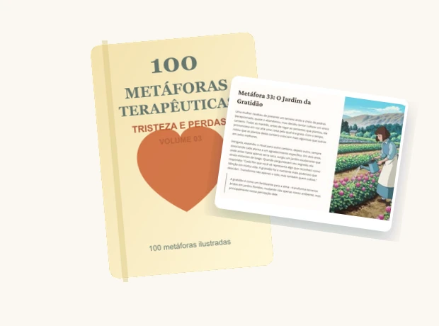
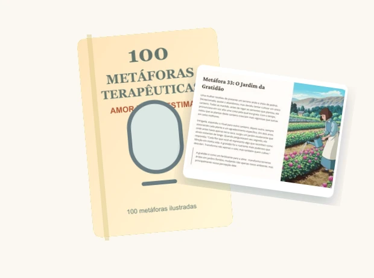

1.500 metafor
1.500 metafor15 tomów uporządkowanych według emocji
Złość, strach, smutek, lęk, poczucie własnej wartości, granice, poczucie winy, relacje i inne tematy pojawiające się na sesjach.

Zrewolucjonizuj swoje podejście terapeutyczne dzięki potężnym metaforom, które upraszczają złożone koncepcje i budzą głębokie zrozumienie emocji. Ten wyjątkowy materiał będzie Twoim codziennym narzędziem do lepszych sesji.
Otrzymujesz 15 plików PDF z 1.500 ilustrowanymi metaforami terapeutycznymi, podzielonymi według tematów emocjonalnych wraz z 3 praktycznymi bonusami.
1.500 metaforZłość, strach, smutek, lęk, poczucie własnej wartości, granice, poczucie winy, relacje i inne tematy pojawiające się na sesjach.
 jasna struktura
jasna strukturaHistoria, ilustracja, morał terapeutyczny, zastosowanie i ćwiczenie na jednej karcie.
 3 bonusy
3 bonusyLista kontrolna diagnozy emocjonalnej, mapa przekonań ograniczających i zasoby na lęk.
Wideo uruchamia się automatycznie bez dźwięku. Kliknij włącz dźwięk, aby posłuchać wyjaśnienia.
Nie musisz improwizować historii w trakcie sesji. Materiał dostarcza gotowy pomost: obraz, narrację, odczyt terapeutyczny i ćwiczenie.

Otwórz tom odpowiadający opracowywanej emocji: lęk, złość, poczucie winy, samoocena, strata, granice lub relacje.
Historia i obraz tworzą prosty pomost dla pacjenta do wizualizacji wzorca emocjonalnego.

Wykorzystaj morał terapeutyczny i ćwiczenie, aby przekształcić wgląd w konkretne zadanie.
Metafora nie jest oderwana. Posiada kontekst, interpretację i ćwiczenie, które dostosujesz do swojej sesji.


Dodatkowe materiały do diagnozy emocjonalnej, przekonań ograniczających i lęku.
Skrypt oceny pozwalający zidentyfikować wzorce emocjonalne już na pierwszej sesji — i przyspieszyć mapowanie pacjenta w 2 do 3 spotkań.
Wizualny schemat głównych przekonań pojawiających się na większości sesji — ze specyficznymi metaforami z e-booka do pracy nad każdym z nich.
Zestaw ćwiczeń, skryptów i technik gotowych do pracy z lękiem na sesji i dla pacjenta do domu.
Otrzymujesz kompletną bibliotekę w formacie PDF do pobrania, przeglądania i korzystania na sesjach. Sprawdź informacje o płatności i dostawie przed przejściem do kasy.
Finalizujesz zakup przez oficjalny checkout Społeczności. Strona używa bezpiecznego połączenia, a dane płatności przetwarza platforma checkout.
To 15 tomów tematycznych po 100 metafor każdy (łącznie 1.500), co daje ponad 3.000 ilustrowanych stron. Każda metafora zajmuje całą stronę z historią, morałem, zastosowaniem terapeutycznym i ćwiczeniem praktycznym. Możesz otworzyć tom dotyczący tematu, którego potrzebujesz — np. Tom 07 (Lęk) na sesję z pacjentem z lękiem.
Nie. Materiał jest przeznaczony dla każdego profesjonalisty pracującego nad rozwojem ludzkim: psychologów, terapeutów, psychoanalityków, pedagogów, coachów, mentorów, edukatorów. Język jest kliniczny, ale przystępny.
Nie zastępuje — uzupełnia. Metafory działają jako pomosty dla każdego podejścia (CBT, humanistycznego, systemowego, psychoanalizy, ACT, EMDR itp.). Kontynuujesz swoje podejście, zyskując potężne narzędzie wizualne do zakotwiczenia wglądów.
Natychmiastowy dostęp po zakupie. Otrzymasz e-mail z linkiem do pobrania 15 tomów PDF + 3 bonusy. Dożywotni dostęp: pobieraj ile chcesz, używaj offline, drukuj strony na sesje.
Tak. Licencja dotyczy użytku profesjonalnego z klientami: do pokazywania na sesjach, drukowania, dołączania do raportów. Nie możesz ich odsprzedawać ani publikować jako własne materiały.
Działa jeszcze lepiej. Udostępniasz ekran, pokazujesz ilustrację, pacjent wizualizuje koncepcję w czasie rzeczywistym. Wielu terapeutów twierdzi, że materiał stał się niezbędny online.
Tak. Wiele tomów ma metafory zaprojektowane z myślą o dzieciach, z zabawnym językiem i ilustracjami. Pedagodzy i psycholodzy dziecięcy są jednymi z najczęstszych użytkowników.
Tak. Nowe metafory i poprawki są dodawane okresowo bez dodatkowych kosztów. Dostęp jest dożywotni i obejmuje wszystkie przyszłe wersje.
Bezwarunkowa gwarancja 7 dni. Uzyskaj dostęp, poznaj 15 tomów i bonusy. Jeśli uznasz, że nie warto, wyślij e-mail, a zwrócimy 100% — bez pytań i bez biurokracji.
Całkowicie. Checkout w środowisku szyfrowanym (SSL). Akceptujemy popularne formy płatności. Żadne dane karty nie są przez nas przechowywane.